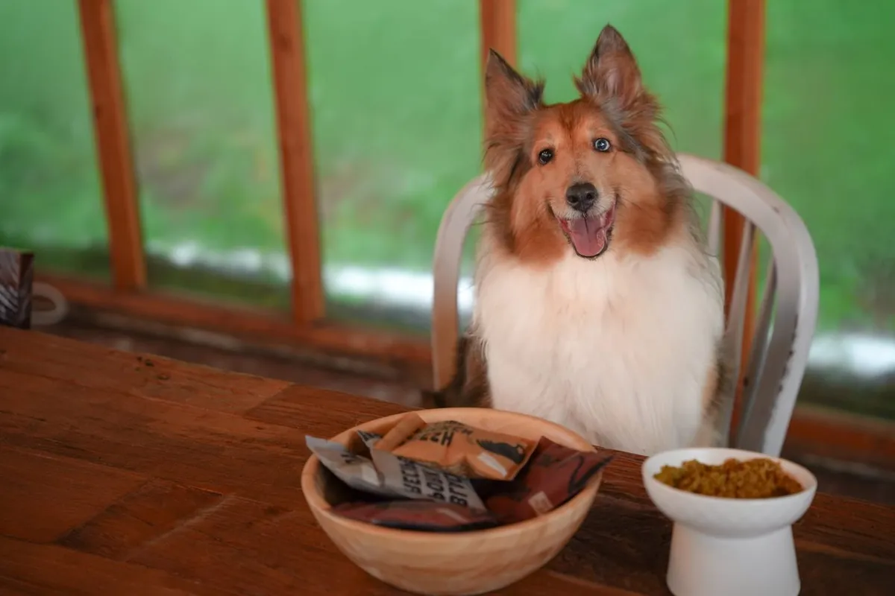
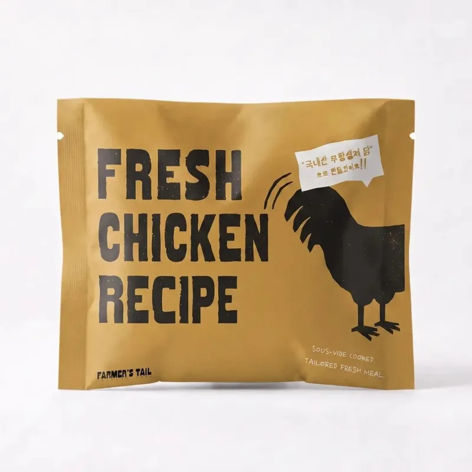
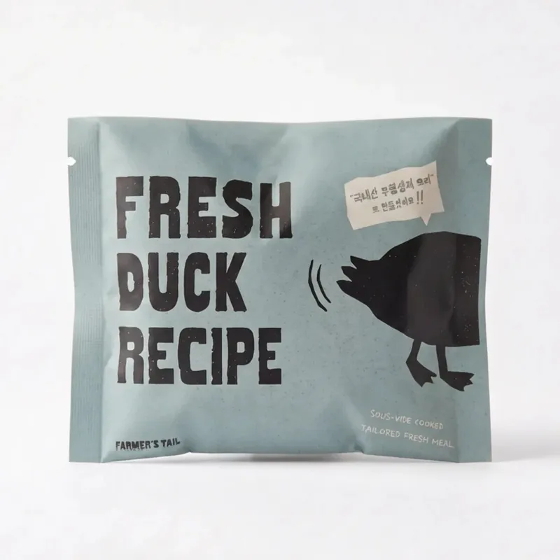
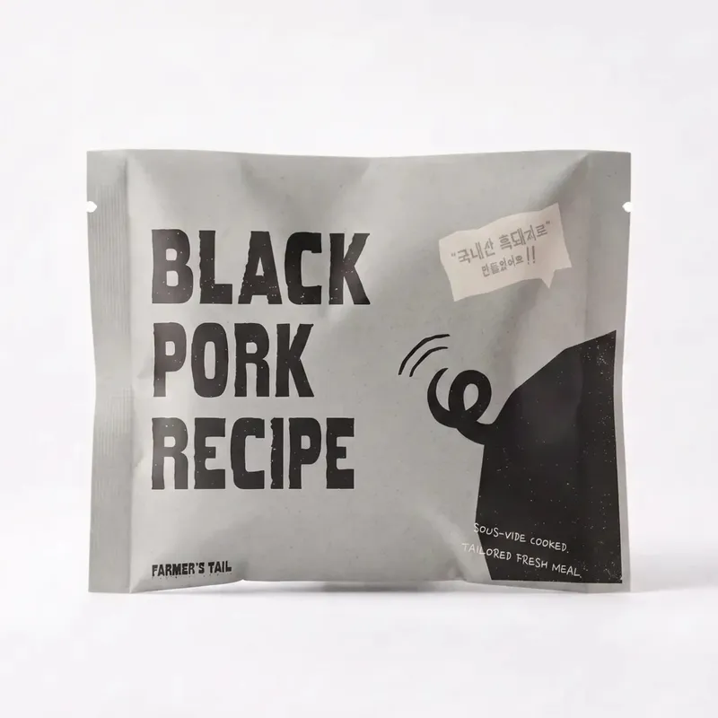
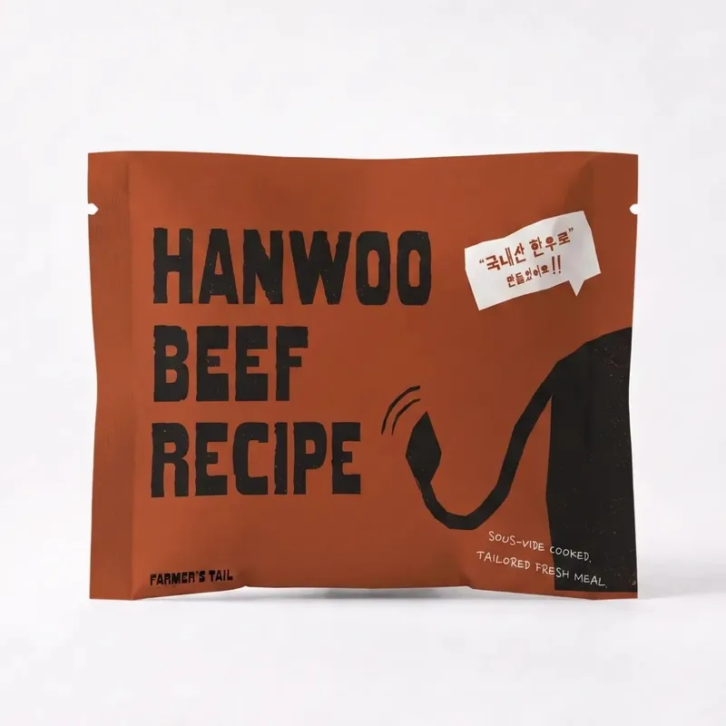
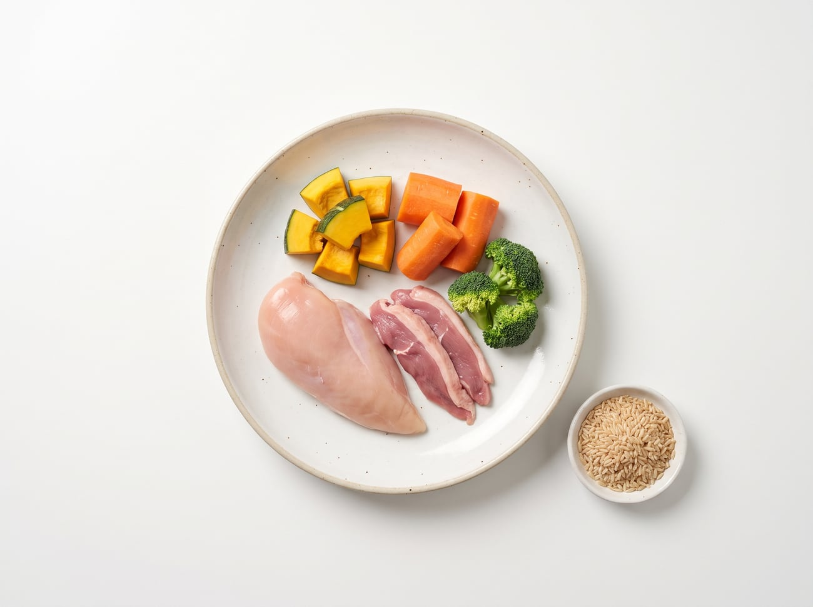

FRESH CHICKEN RECIPE
닭고기 화식BEST
담백하고 부담 없는
매일의 데일리 한 끼
매일의 데일리 한 끼
- 이런 아이에게
- 주요 원재료
- 무항생제 닭가슴살 · 닭간 · 닭염통 · 브로콜리 · 블루베리
- 열량
- 125kcal / 100g

사람이 먹는 국내산 재료를 저온 수비드로 익혀
육즙과 영양을 그대로 담았어요.

닭고기
오리
흑돼지
한우사람이 먹을 수 없는 재료는 넣지 않아요.
글루텐·화학보존제·부산물·인공색소·유당·육분
낮은 온도로 천천히 익혀 육즙과 영양을 지켜요.
사료제조업 등록 공장에서 자체 생산, 유통 마진 없이.
전용 프리믹스로 AAFCO·FEDIAF·NRC 43개 항목 충족.
4종 모두 같은 공정·같은 영양 기준으로 만들어요.
단백질과 토핑만 달라요.


4종 공통 — 당근 · 단호박 · 시금치 · 현미 · 고구마 · 올리브유 · 연어유 · 강황 · 뉴트리 코어 · 난각분말
우리 가족 식탁에 올리는 재료 그대로.
기호성과 영양, 둘 다 원물에서 시작해요.

사람이 먹을 수 없는 건
절대 넣지 않아요

들어온 재료를 하나씩 확인하고 깨끗이 씻어요.
낮은 온도에서 천천히 익혀 육즙을 가둬요.
고기·채소·곡물을 정해진 비율로 섞어요.
뉴트리 코어로 부족하기 쉬운 영양을 채워요.
바로 얼려 갓 만든 신선함을 그대로 잠가요.
한 끼씩 포장해 냉동 상태로 보내 드려요.
화식만으로는 부족하기 쉬운 비타민과 미네랄을
식약처 식품원료로 등재된 성분의 프리믹스로
꼼꼼하게 채웠어요. 오메가 3·6 배합까지.
파머스테일 뉴트리 코어 · 식약처 품목보고번호 2009036023152
식품안전나라에서 등록 사항을 직접 확인하실 수 있어요.
원물 검수부터 조리·배합·급속냉동까지
정해진 공정을 거쳐 국내에서 생산해요.
인천광역시 · 제 2026-0004호
닭고기 · 오리 · 흑돼지 · 한우 레시피 모두
만든 곳에서 바로 보내 신선하게
| 성분 | 닭고기 | 오리 | 흑돼지 | 한우 |
|---|---|---|---|---|
| 조단백질이상 | 15.1% | 13.1% | 14.9% | 13.9% |
| 조지방이하 | 4.7% | 5.2% | 5.4% | 5.5% |
| 조섬유이하 | 0.3% | 0.3% | 0.2% | 0.3% |
| 조회분이하 | 2.2% | 2.1% | 2.1% | 2.1% |
| 수분이하 | 75.2% | 76.3% | 76.1% | 75.1% |
| 칼슘이상 | 0.3% | 0.3% | 0.3% | 0.3% |
| 인이상 | 0.3% | 0.3% | 0.3% | 0.3% |
| 열량kcal/100g | 125 | 130 | 125 | 145 |
100g당 평균 약 131kcal. 수분은 듬뿍, 칼로리는 가볍게.
기존 사료에 조금씩 섞어 화식 비율을 천천히 늘려요.